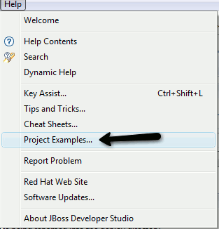
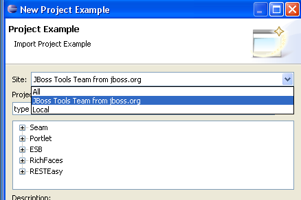
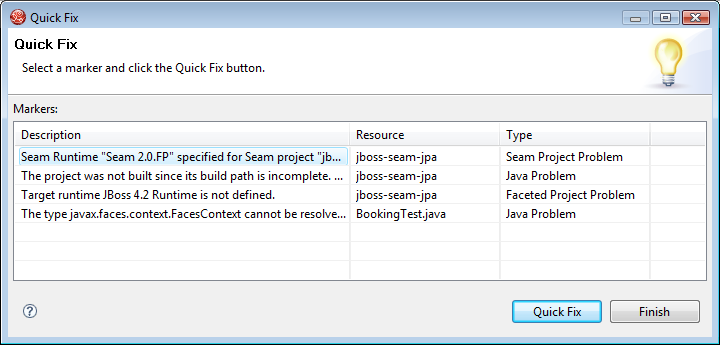

General
We have added an experimental feature called Project Example wizard that is intended to allow users to download example projects from a remote site and have it working out of the box.

The wizard provides a categorized list of projects that can be downloaded and configured in JBoss Tools.

We are still experimenting with the projects thus some of them might need to be manually configured after download to set the right datasource, runtime etc.
Project Examples is available directly from the Help menu.

Project Examples Wizard provide a filter and site field to more easily locate the project examples you want.

Project Examples Wizard now provide an option for running Quick fixes on an imported project to easily fix possible issues like i.e. missing servers, seam runtimes etc.

For this to work the smoothest we added quick fixes for various Seam problem markers.
Project Examples projects can now have an associated html or cheatsheet file associated with the project.
<welcome type="cheatsheets" url="/testjavaportlet/javaportletcs.xml"/>
Currently only the javaportlet example has a (rudimentary) cheatsheet, but we will be adding more going forward.